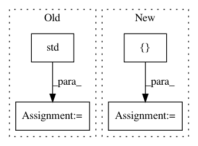

a1d1c2ce8d20099a51a3a55d0fcb18659a3e34c9,QUANTAXIS/QAARP/QARisk.py,QA_Risk,calc_sortino,#QA_Risk#Any#Any#Any#,597
Before Change
// Calculate expected return and std dev of downside returns
expected_return = daily_returns.mean()
down_stdev = negative_returns.std()
// Calculate the sortino ratio
sortino_ratio = (expected_return - rfr)/down_stdev
// 这里不知道计算年化率如何
After Change
target = 0
// Calcualte the daily returns from price data
df = pd.DataFrame(columns=["Returns","downside_returns"],
index=self.assets.index)
df["Returns"] = (self.assets.values / self.assets.shift(1).values) - 1
df["downside_returns"] = 0
// Select the negative returns only
df.loc[df["Returns"] < target, "downside_returns"] = df["Returns"] ** 2
expected_return = df["Returns"].mean()
// Calculate expected return and std dev of downside returns
down_stdev = np.sqrt(df["downside_returns"].mean())
// Calculate the sortino ratio
sortino_ratio = (expected_return - rfr) / down_stdev
In pattern: SUPERPATTERN
Frequency: 3
Non-data size: 4
Instances
Project Name: QUANTAXIS/QUANTAXIS
Commit Name: a1d1c2ce8d20099a51a3a55d0fcb18659a3e34c9
Time: 2020-05-06
Author: 11652964@qq.com
File Name: QUANTAXIS/QAARP/QARisk.py
Class Name: QA_Risk
Method Name: calc_sortino
Project Name: asyml/texar
Commit Name: 99153ad034108b7d0e759fc246cb3d05593ee897
Time: 2018-06-02
Author: zhitinghu@gmail.com
File Name: texar/agents/pg_agent.py
Class Name: PGAgent
Method Name: _train_policy
Project Name: kwgoodman/numerox
Commit Name: cb69f51776fe6c75b4349b2ee2f8c0762a5751bf
Time: 2017-12-19
Author: kwgoodman@gmail.com
File Name: numerox/report.py
Class Name: Report
Method Name: performance_df